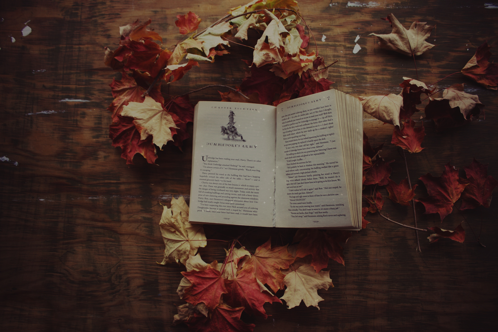
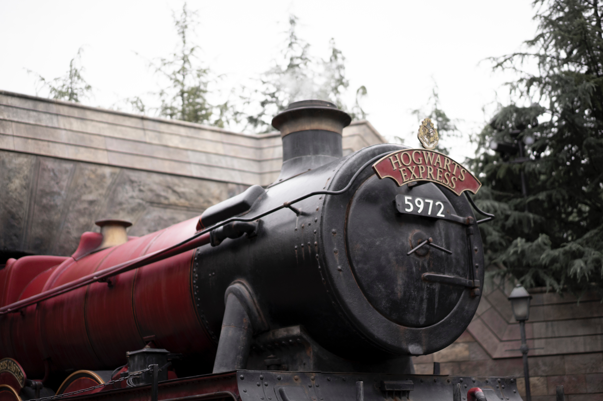

This site has been created to house some information about Harry potter! Like thousands of others, I am a huge fan! Please take a look at some of my favoruite characters and have a read about the two main attractions available for us fans. I hope you enjoy browsing the site!

JK Joanne Rowling was born on 31st July 1965. Dianne, her younger sister, was born almost two years later and Joanne’s earliest childhood memory is of Dianne’s arrival. She, her sister and her parents lived in Winterbourne, Gloucestershire, until Joanne was nine, when the family moved to Tutshill, near Chepstow. Joanne grew up surrounded by books as her mum and dad loved reading – she says, ‘I lived for books … I was your basic common-or-garden bookworm, complete with freckles and National Health spectacles.’ From an early age Joanne wanted to be a writer. She wrote her first book at the age of six – a story about a rabbit called Rabbit. Then when she was eleven she wrote a novel about seven cursed diamonds and the people who owned them. Joanne went to school at Wyedean Comprehensive School and then went on to study French and Classics at the University of Exeter. Her Classics studies would come in very handy later when she was thinking up all the spells in Harry Potter, some of which are based on Latin! J.K. Rowling first had the idea for Harry Potter while delayed on a train travelling from Manchester to London King’s Cross in 1990. Over the next five years, she began to plan out the seven books of the series. She wrote mostly in longhand and amassed a mountain of notes, many of which were on scraps of paper. She arrived in Edinburgh in 1993 with three chapters of Harry Potter and the Philosopher’s Stone in her suitcase. By now she had a baby daughter, Jessica, but she continued to write in every spare moment she could find. When Joanne had finished the manuscript, she sent the first three chapters to a number of literary agents, one of whom wrote back asking to see the rest of it. She says that it was ‘the best letter I had ever received in my life’. After finishing the first book and whilst training as a teacher, Harry Potter was accepted for publication by Bloomsbury. Harry Potter and the Philosopher’s Stone quickly became a bestseller on publication in 1997. As the book was translated into other languages, Harry Potter started spreading round the globe – and J.K. Rowling was soon receiving thousands of letters from fans. The Harry Potter books have since broken many records. In 2007 Harry Potter and the Deathly Hallows became the fastest-selling book ever, selling 2.65 million in the first 24 hours in the UK. The Harry Potter series is now published in 80 languages, and over 500 million copies have been sold across the world. J.K. Rowling has also written three companion volumes in aid of charity: Quidditch Through the Ages and Fantastic Beasts and Where to Find Them (in aid of Comic Relief and Lumos); and The Tales of Beedle the Bard (in aid of Lumos). In 2015 J.K. Rowling's 2008 Harvard commencement speech was published under the title 'Very Good Lives: The Fringe Benefits of Failure and the Importance of Imagination' (in aid of Lumos and university financial aid at Harvard). In 2012, J.K. Rowling’s digital company Pottermore was launched, where fans can enjoy her new writing and immerse themselves deeper in the wizarding world. J.K. Rowling has written a film script inspired by Fantastic Beasts and Where to find Them, with the film due for release in Autumn 2016. In addition to J.K Rowling's collaboration on Harry Potter and the Cursed Child Parts I & II, an original new story by J.K.Rowling, Jack Thorne and John Tiffany, a new play by Jack Thorne, she is also making her screenwriting debut with the film Fantastic Beasts and Where to Find Them, a further extension of the wizarding world, due for release in November 2016. J.K. Rowling has received many awards and honours, including an OBE for services to children’s literature, France’s Légion d’Honneur, and the Hans Christian Andersen Award.